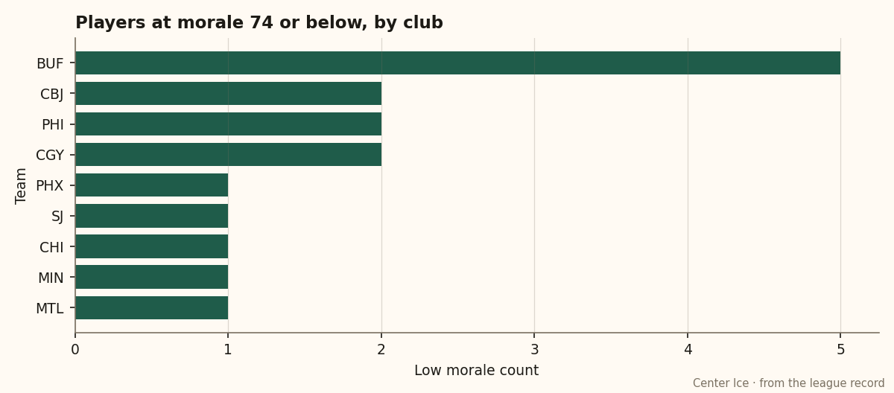
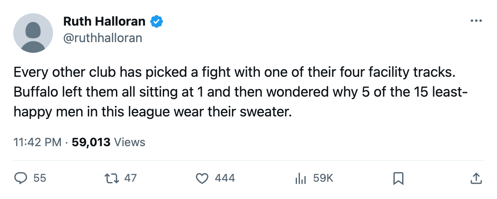
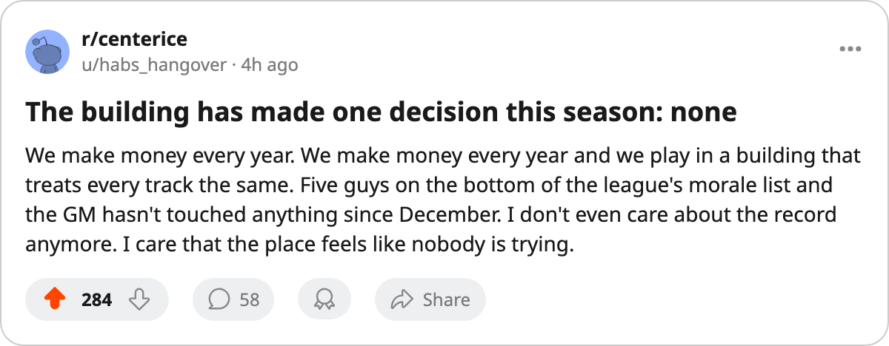

The Flat Club: Buffalo runs every live track at level 1 and has the league's worst morale problem
Four tracks, four penalties of minus-4, no upgrades since the record opened, $20.54M in profit sitting in the bank
 Ruth HalloranBusiness of hockey · The Building
Ruth HalloranBusiness of hockey · The Building Buffalo Sabres sits at level 1 on all four tracks that move a rating. Equipment, workout, practice, travel: four times minus-4, a live sum of -16, and no upgrade recorded since tracking opened on December 4.
Buffalo Sabres sits at level 1 on all four tracks that move a rating. Equipment, workout, practice, travel: four times minus-4, a live sum of -16, and no upgrade recorded since tracking opened on December 4.
The Sabres are the only club in this league with a uniform facility profile. Every other team has built something unevenly, put money into one room and left another bare. Buffalo Sabres has not. General manager Dave Metzker runs a prestige-397 operation that clears $20.54M in profit on a $44.16M payroll and books 16,060 a night at $76.
Five of the league's 15 least-happy men wear Buffalo sweaters:  Andrew Brunette74 at 72,
Andrew Brunette74 at 72,  Martin Biron88 at 72,
Martin Biron88 at 72,  Mike Leclerc74 at 72,
Mike Leclerc74 at 72,  Jean-Pierre Dumont76 at 74,
Jean-Pierre Dumont76 at 74,  Eric Boulton66 at 74. The next-closest club has 2. Buffalo's team average sits at 86.8, tied with
Eric Boulton66 at 74. The next-closest club has 2. Buffalo's team average sits at 86.8, tied with  Calgary Flames for the second-lowest in the league.
Calgary Flames for the second-lowest in the league.

The Sabres are 22-29-6, 62 points through 63 games, on an 8-game losing streak that started February 15. They went 2-9-1 across the 12 games the record shows for February, scoring 22 and allowing 32. The home record is 15-16. The road record is 13-19.
The tracks that actually work
The tuning file gives the locker room a curve from -10 to +10 and labels it a morale effect. Nothing in this build reads it. Buffalo's locker room sits at level 1, which carries a -8 modifier in the file, but upgrading it would show nothing in the record. The desk cannot price the fix or prove the harm.
The same applies to the scouting room (level 2 here, effect only on trade valuation, which is a number nobody outside a club can see). Coaching, medical, marketing and legal are commented out of the shipped data entirely.
That leaves the four live tracks, all at level 1, all at the same cost. The building charges its players the same rate in every dimension it can measure.
What the gate buys
Buffalo clears $20.54M on the season. The payroll is $44.16M, which puts per-point cost at $0.71M, roughly middle of the pack. The club does not look financially constrained by any measure the league records. Attendance is healthy at 16,060. The ticket is $76, the second-cheapest in the league.
 Tampa Bay Lightning raised practice in the week of February 21.
Tampa Bay Lightning raised practice in the week of February 21.  Edmonton Oilers raised equipment February 6-7.
Edmonton Oilers raised equipment February 6-7.  Chicago Blackhawks raised the locker room January 26-30.
Chicago Blackhawks raised the locker room January 26-30.  Toronto Maple Leafs raised travel and then the workout room. Eleven upgrades across the league since December 4, none of them Buffalo.
Toronto Maple Leafs raised travel and then the workout room. Eleven upgrades across the league since December 4, none of them Buffalo.
The deadline and what comes next
Seventeen days to the trade deadline. Buffalo is 25 points behind  New York Rangers for the final Atlantic playoff spot. Five men sit at the league's morale floor.
New York Rangers for the final Atlantic playoff spot. Five men sit at the league's morale floor.
The record cannot show what an upgrade would do to any of those numbers. It can show that the Sabres have made one fewer decision than they could have, and that the five least-happy men in this league happen to play on the same roster.

